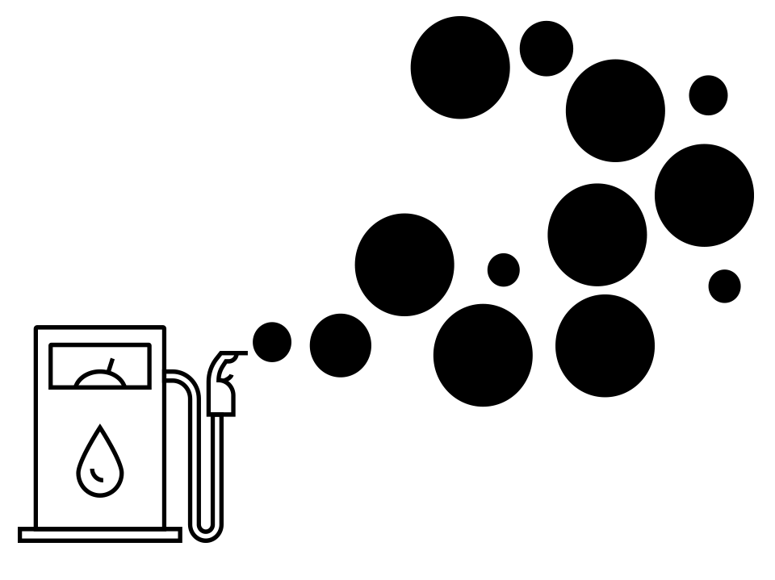

Un futuro con buena energía
no más petróleo ni gas
Un futuro con buena energía
no más petróleo ni gas
Nos prometen un futuro mejor con más petróleo Pero con más petróleo el futuro será NEGRO.
Proyecto eco eco te propone: contá, cantá, rapeá, decilo con un meme o con humor gráfico.
Bajo el lema NO MÁS PETRÓLEO Y GAS, UN FUTURO CON BUENA ENERGÍA, Proyecto Eco Eco realiza convocatorias públicas con premios para cada una de las siguientes categorías:
Contanos con tu arte cómo ves la crisis que está provocando el petróleo y el gas en la argentina y en el mundo. Hablanos de la contaminación del presente, del cambio climático, de la codicia de los poderosos, de las promesas vacías, de la gente que sufre para que otros se llenen los bol- sillos. Expresá tu bronca. Decilo de la manera que quieras. Llevate un premio.
Esta es nuestra primera convocatoria artística para hablar sobre la peligrosa expansión del petróleo y del gas. Según las Naciones Unidas, es necesario detener estos proyectos para impedir los peores efectos del cambio climático.
BASES Y CONDICIONES
PREGUNTAS
¿QUERÉS MÁS INFORMACIÓN?
ECO ECO es una iniciativa de Periodistas por el Planeta, una ONG dedicada a difundir nuevas narrativas sobre la crisis planetaria. ECO ECO se propone amplificar una discusión invisibilizada por los grandes medios y el poder, desde diferentes expresiones artísticas.